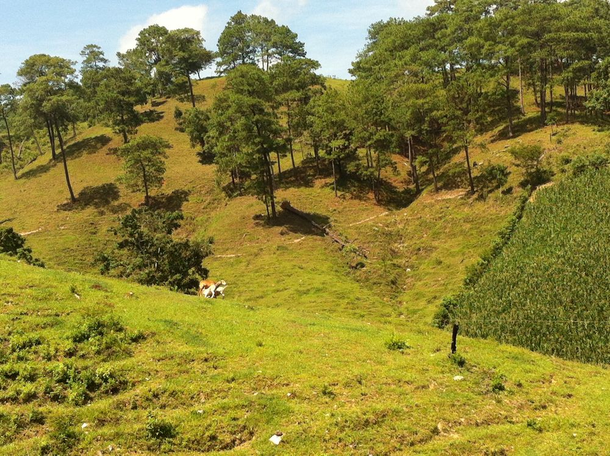
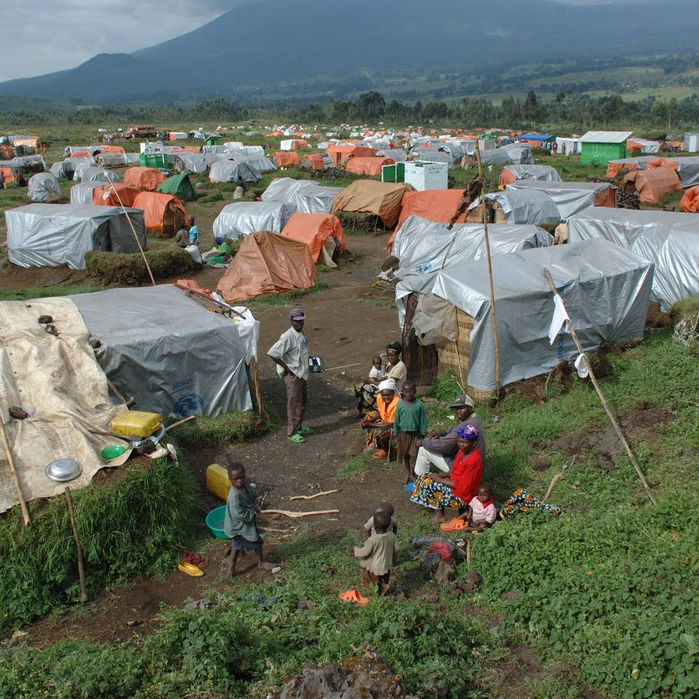

Publications
Grouped by research theme, newest first. Each title links to the published version. Replication packages for many of these papers are on my Dataverse.
Causes of land use change

What causes deforestation?
Refereed journal articles
A synthesis of the evidence on how farming and the environment interact across the tropics, cataloging policies that highlight where food production and environmental quality can be made to work together.
Production bans do not always do what is intended. Kenya's 2018 logging ban displaced wood extraction rather than reducing it, driving domestic charcoal prices up about 36% and charcoal imports from neighboring Uganda up 133% within the first six months.
Land use policy
How can we prevent land use change?
Refereed journal articles
Drawing on a synthesis of more than 200 studies, this paper proposes eight design principles for conservation programs that can succeed simultaneously on environmental, economic, and equity goals.
In a field experiment with Ugandan forest users, insecure land tenure raised tree extraction by 23%, while the option to secure tenure through certification cut that effect in half, showing that strengthening property rights can meaningfully reduce deforestation.
Brazil's Atlantic Forest Restoration Pact increased restored forest cover on supported private land by 10–20 percentage points, with the largest gains in more remote areas and in states with stronger environmental enforcement, demonstrating that large-scale restoration on private land is achievable when the economic and institutional conditions line up.
Mexico's per-head livestock subsidy increased municipal deforestation by about 7%, though the effect was smaller where payments for ecosystem services were more common, suggesting that agricultural subsidies can quietly undercut conservation programs and would do less damage if better targeted.
Book chapters
Reports and other writing
Forced migration

How do internally displaced people and refugees affect host communities?
Refereed journal articles
Reports and other writing
Economic history, geography, and other stuff
How do history and geography determine the landscapes we see today? And other miscellaneous questions.